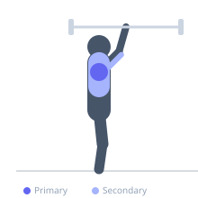

Exercise guide / Z-Press with Barbell (Snatch Grip)
Z-Press with Barbell (Snatch Grip)
The snatch-grip Z-press uses an extra-wide overhand grip on the barbell while seated on the floor, requiring the bar to travel overhead with the wide grip that characterizes the snatch lift. This variation trains the deltoids and trapezius through a wide-grip pressing pattern while the floor position eliminates leg drive, making it an effective strength quality exercise for Olympic lifters and overhead athletes seeking to develop overhead stability with snatch-width grip.
Primary muscles
deltoid anterior
deltoid lateral
Secondary muscles
triceps brachii
trapezius upper
Stabilizers
erector spinae
transverse abdominis
Equipment
No Equipment (Bodyweight)


Starting position
- Sit on the floor with legs extended. Grip the barbell in snatch-width grip (at the outer knurling marks). Hold at shoulder height.
Setup
- This requires both shoulder mobility and hip/hamstring flexibility. Assess mobility requirements before loading. Light to moderate weight only.
Steps
- Step 1: Sit tall with legs extended, barbell at shoulder level in snatch grip.
- Step 2: Press the barbell straight overhead.
- Step 3: At lockout, the wide grip means the bar is directly above and slightly behind the head.
- Step 4: Lower under control to shoulder level.
- Step 5: Maintain upright torso — no lean.
Coaching cues
- Grip at snatch width — hands on the outer knurling
- Upright torso — legs stay flat
- Elbows fully locked at the top
Breathing
- Exhale pressing. Inhale descending.
Range of motion
- Shoulder height to full snatch-grip overhead lockout.
Tempo
- 2-1-2-0
Common mistakes
- Grip narrower than true snatch width — defeats the purpose
- Leaning back — requires core strength and hamstring flexibility to stay upright
Safety
- Assess shoulder external rotation range before attempting snatch grip overhead work
- Light loads only — the wide grip is mechanically disadvantaged
Training
- strength: 3–8 reps
- strength: 3–5 sets
- Rest: {'strength': 180}